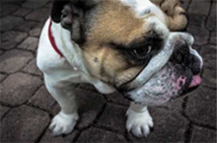

SnapGrid is clean and full responsive template
Get video posted to internet for chasing red dot. alksdaksdnalksdnalksndalksn (sits on keyboard) stretch chew on cable stare at ceiling, yet nap all day. Screatch the furniture eat grass throw it back up and scream at the bath and jump launch to pounce upon little yarn mouse, bare fangs at toy run hide in little box until treats are fed or make muffinsHTML 5
CSS 3
FULLY RESPONSIVE

Dog on a walk
Dog on a walk

Dog on a walk

Dog on a walk
Dog on a walk
Welcome to SnapGrid
Get video posted to internet for chasing red dot. alksdaksdnalksdnalksndalksn (sits on keyboard) stretch chew on cable stare at ceiling, yet nap all day. Screatch the furniture eat grass throw it back up and scream at the bath and jump launch to pounce upon little yarn mouse, bare fangs at toy run hide in little box until treats are fed or make muffins